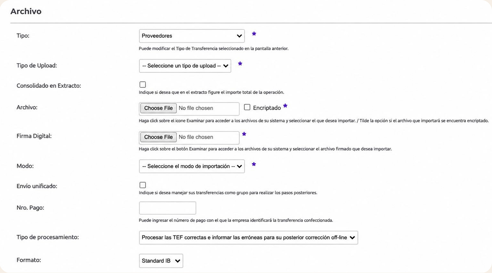
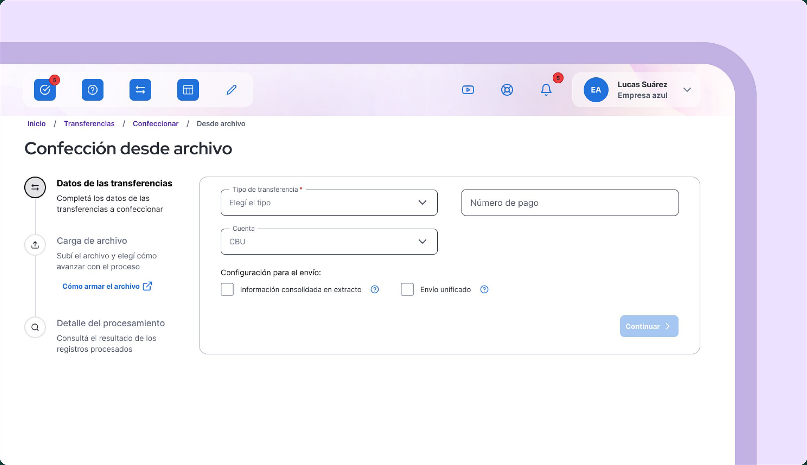
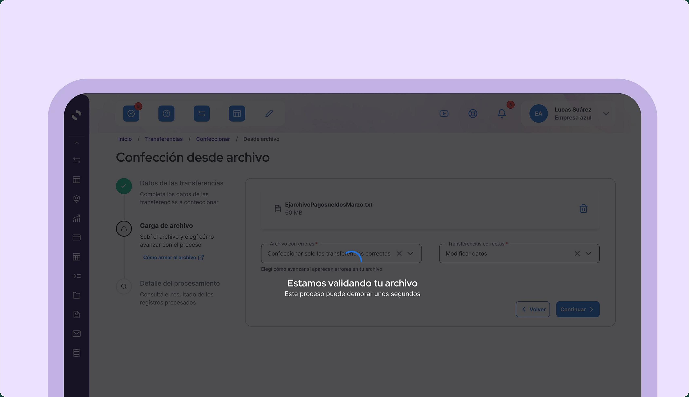
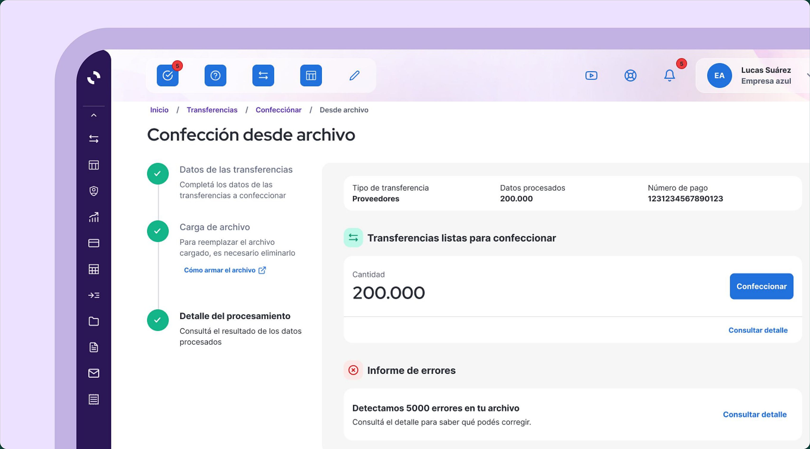

LEGACY REDISEÑADO
Proyecto: Qué resolvimos
Rediseñamos la experiencia de transferencias masivas mediante archivo, simplificando procesos manuales y permitiendo ejecutar múltiples transferencias para una misma fecha y hora, especialmente para el pago de sueldos.

Contexto: Porqué era necesario
La complejidad y la cantidad de pasos para realizar transferencias masivas llevaba a los usuarios a elegir otras plataformas, reduciendo el uso del producto y aumentando la baja hacia planes de menor consumo.
Mi rol: Qué lideré
Lideré el análisis y rediseño de la experiencia, identificando las fricciones detrás de los “muchos pasos” reportados por los usuarios. Junto a negocio y tecnología, simplificamos la funcionalidad con el objetivo de mejorar su adopción y aumentar el billing promedio.
Estrategia: Cómo abordamos el problema
Quejas de usuarios → Análisis del flujo → Priorización → Rediseño → Validación
1. Quejas de usuarios
“No es intuitivo ni muy amigable a lo que era antes... tenés que leer y mirar bien para decir si lo hice bien o no.” Vanesa
“Este paso no vale la pena, la información ya la vi antes. Avanzaría directo a autorizar.” Roberto
“...cuando cambiaron de la otra a esta, es como que me costó acostumbrarme... ya pasamos por tres pantallas diferentes y no lo terminamos todavía... no sabía qué tenía que hacer para seguir.” Claudia
“Antes veíamos de qué cuenta a quién en un renglón. Acá solo veo cuenta de origen; si no estoy segura tengo que ir y volver. Si no estoy segura de a quién le pago, tengo que confirmar y volver atrás para chequear.” Vanesa
2. Análisis del flujo
Las personas usuarias que operan transferencias de manera frecuente, muchas veces bajo presión de tiempo y manejando altos volúmenes, necesitan que el proceso sea rápido y eficiente, pero sin perder la visibilidad de la información crítica que les permite validar cada operación con seguridad.
3. Priorización
Para cumplir con el deadline y educar a los usuarios con la nueva experiencia, se decidió avanzar con las siguientes funcionalidades:
- Limitar a subir 1 solo archivo.
- Solo se permite subir un tipo de TEF por archivo.
- Nuevo micro frond-end: permite usar nuevo DS en el flujo.
- Permisos del operador: modificar datos, tipo de TEFs, etc.
4. Rediseño
Se tomo como estructura el sistema que se venia utilizando para que el cambio de experiencia no sea radical y la curva de adopción sea mucho mas rápida.
NUEVA PROPUESTA
Solución: Qué cambió
Reducimos la experiencia completa a 3 pasos y centralizamos el proceso en un flujo más claro.
3 pasos: Una experiencia guiada
Se reorganizó la información mediante una jerarquía progresiva, desde lo general hacia lo particular, priorizando la claridad del contenido y la identificación de los campos obligatorios para avanzar en el proceso.

Visibilidad del proceso: Reducir la incertidumbre en momentos críticos
Durante la validación del archivo de transferencias, incorporamos un indicador de progreso y mensajes de estado para comunicar que el sistema está procesando la información. Esta decisión busca reducir la incertidumbre, transmitir confianza y brindar mayor tranquilidad al usuario en una operación financiera sensible.

Resumen claro: Decisiones informadas antes de una acción irreversible.
Diseñamos una instancia de revisión que permite visualizar los resultados del procesamiento, diferenciando las transferencias listas para confeccionar de aquellas que presentan errores. Esta jerarquización de la información busca facilitar la identificación de inconsistencias, brindar mayor control sobre la operación y permitir que el usuario avance con confianza.
